04 / Product CaseHuawei Mate X6 · Sunset Collection

THE INSPIRATION OF A SUNSET
日落·月升
凯夫拉芳纶纤维手机壳
Product Concept / 01Lightness · Technology · Texture
THE INSPIRATION OF A SUNSET
华为 Mate X6
芳纶纤维保护壳

CORE BENEFITS
轻薄之上，
建立可靠的安全感。
05 / Product ConceptLightness · Technology · Texture
PRODUCT CONCEPT
只为还原
裸机体验感
日落主题 · 灵感型手机壳设计

DESIGN OBJECTIVE
基于产品功能与材质特性，构建具有情绪表达的视觉语言；在保证电商传播效率的同时，强化“轻薄、科技、质感”的核心认知。
06 / Core BenefitsMaterial · Structure · Protection
PRODUCT VALUE
轻薄之下，
依然坚韧。
琥珀磁衣轻薄如裸机。以航空级芳纶纤维、磁吸结构与镜头防护，建立手感与安全感之间的平衡。
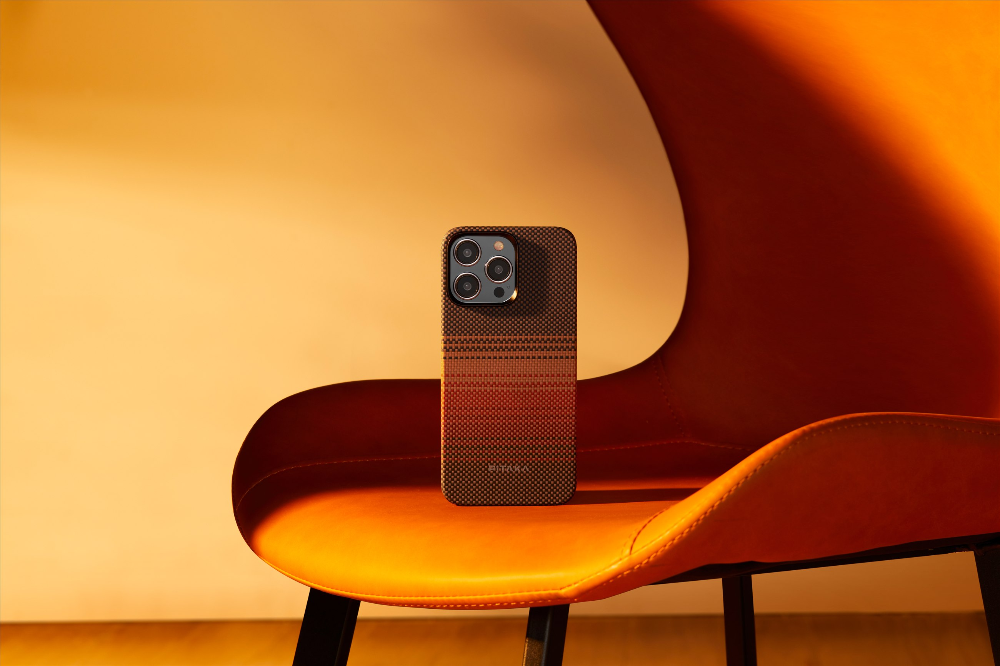
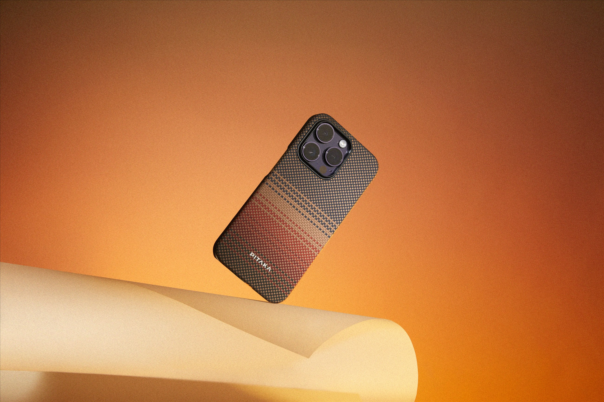
01航空级芳纶纤维
更轻盈，更坚韧。
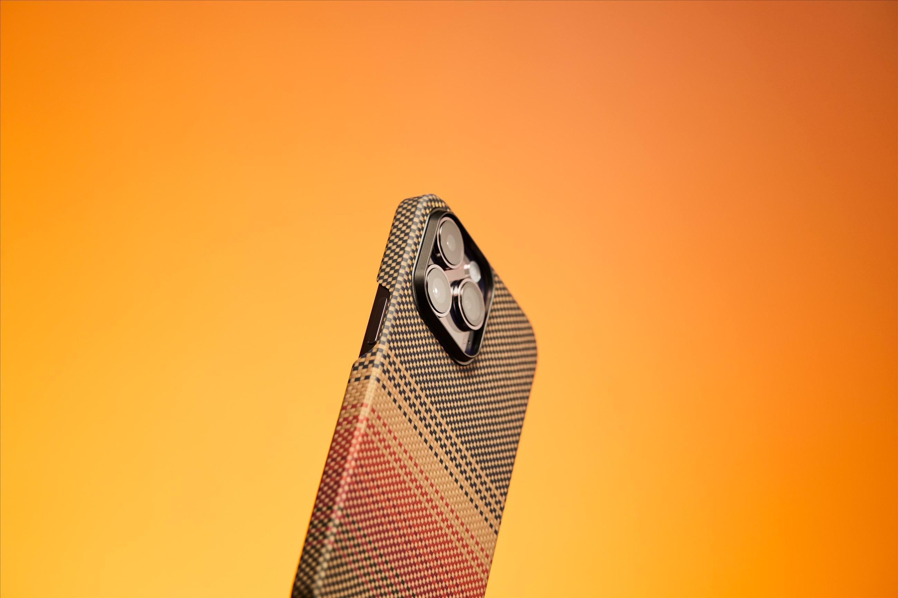
02琥珀磁吸系统
支持无线快充。
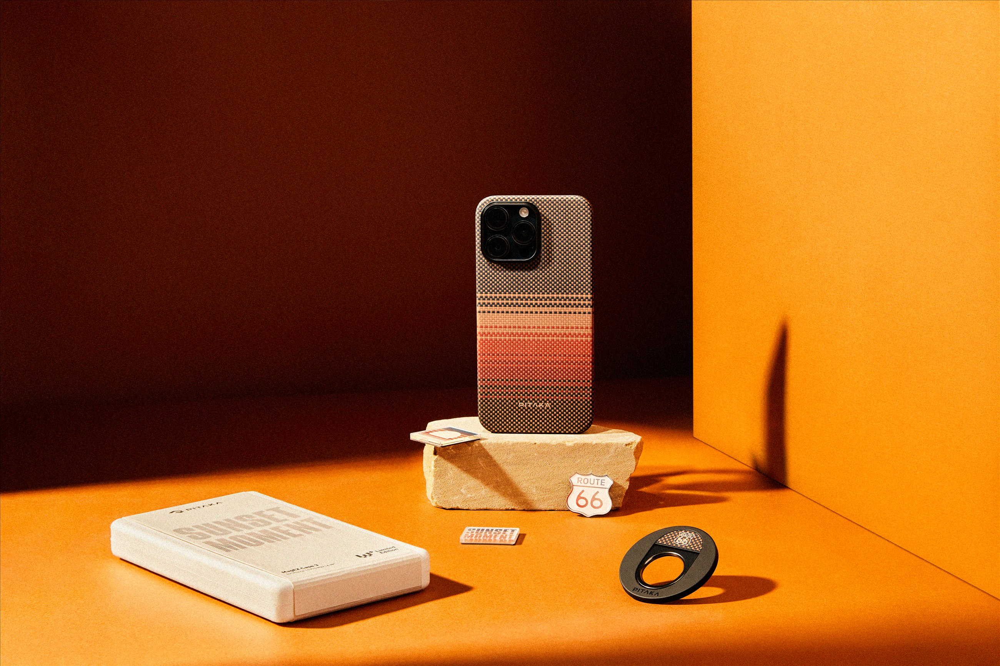
03火山口镜头保护
局部结构强化防护。

07 / Visual StrategyProduct-led · Atmosphere-supported
DESIGN CONCEPT
把“日落”变成
可触摸的视觉语言。
以产品为主导、氛围为辅助，将材质纹理与自然光影进行情绪化融合。
 / 01
/ 01TIME
时间感
从炽热到沉静对应产品从视觉到触感的过渡
/ 02
层次感
光影渐变呼应芳纶编织结构
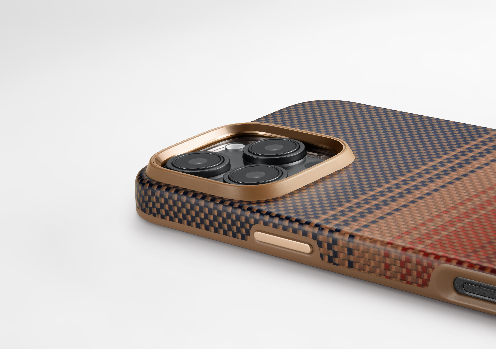
/ 03MOOD
氛围感
温暖 / 克制 / 高级贴合品牌调性
/ 04
材质表达
微距与斜向光强化立体触感
08 / Visual OutcomeHuawei Mate X6 · Commerce Visual
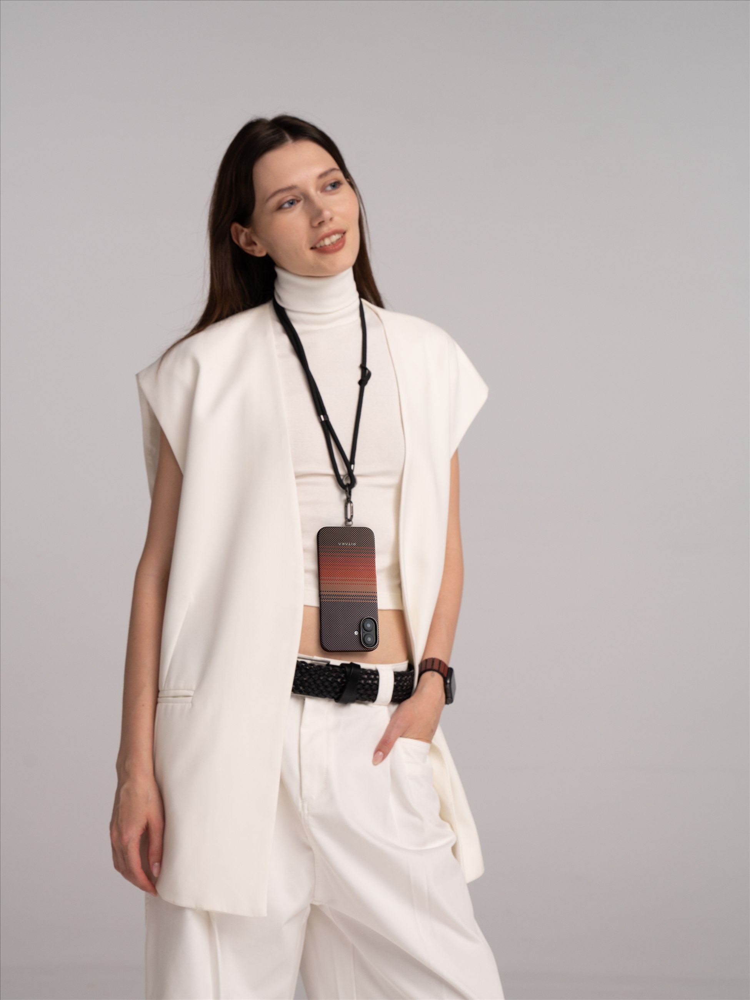
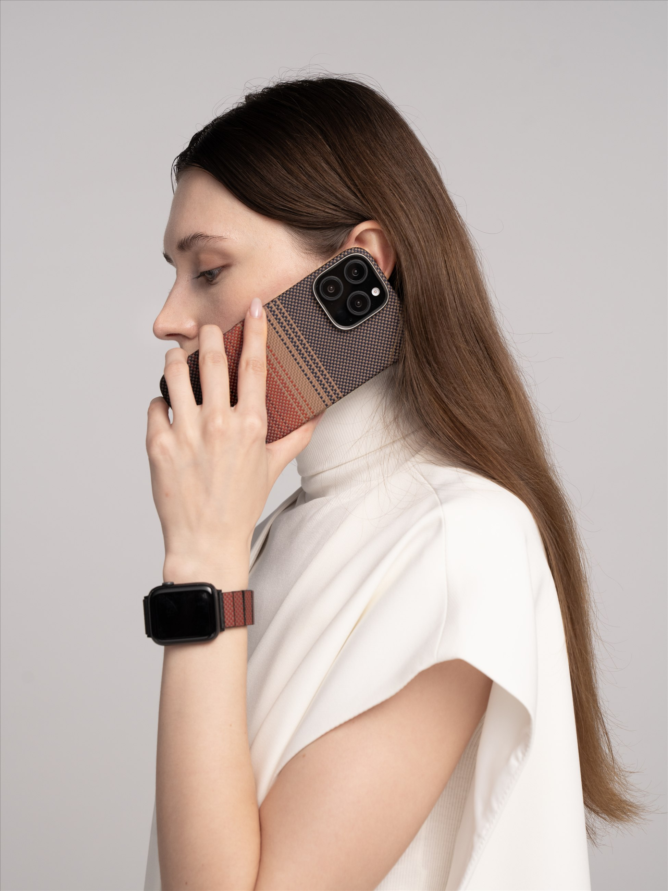
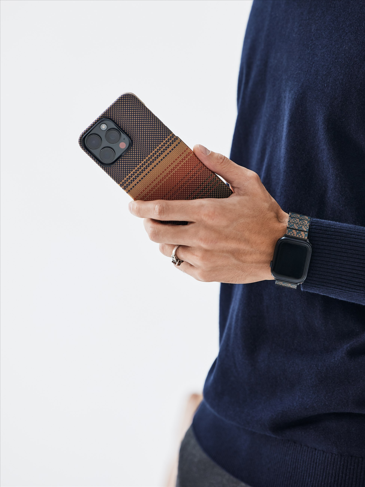
© 2026 Jamie PortfolioBack to top ↑
09 / Web UI & Commerce Experience
Mobile & Desktop
Commerce UI
从产品详情、使用场景到购买决策，建立一套统一的 Mate X6 手机壳电商体验。
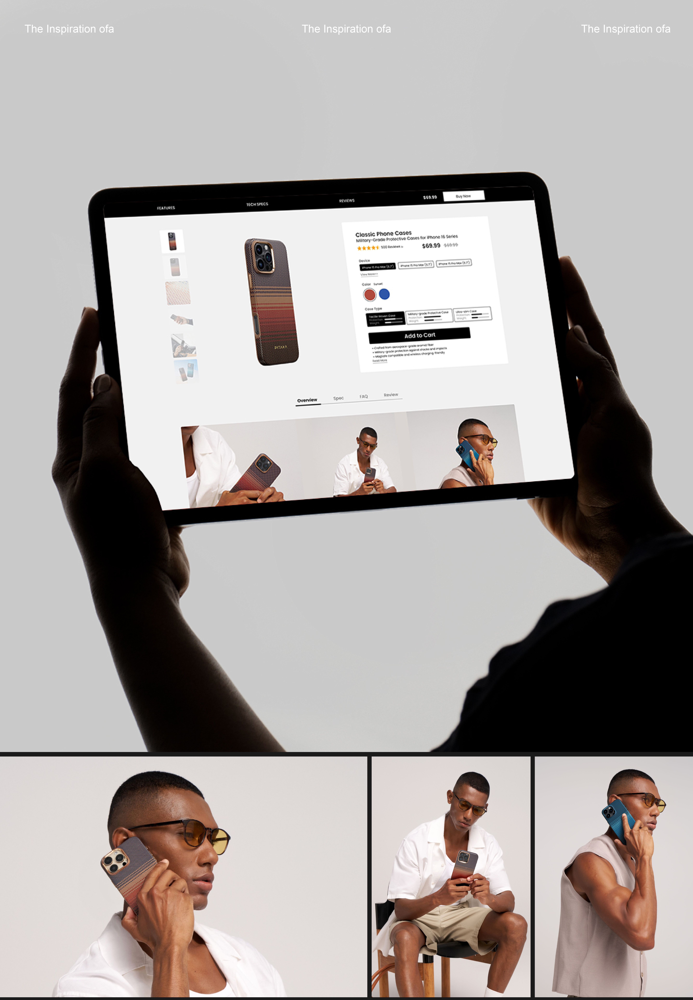
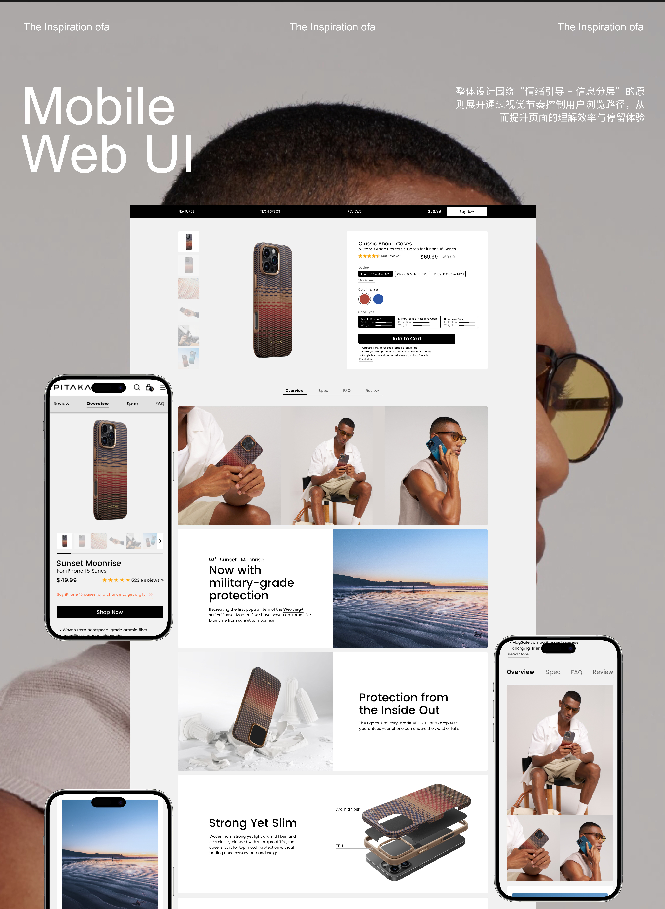
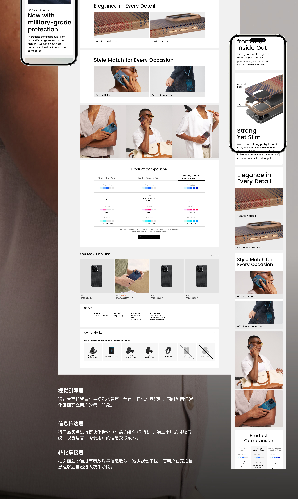
视觉引导层
通过大面积留白与主视觉构建第一焦点，强化产品识别，同时利用情绪化画面建立用户的第一印象。
信息传达层
将产品卖点进行模块化拆分（材质 / 结构 / 功能），通过卡片式排版与统一视觉语言，降低用户的信息获取成本。
转化承接层
在页面后段通过节奏放缓与信息收敛，减少视觉干扰，使用户在完成信息理解后自然进入决策阶段。